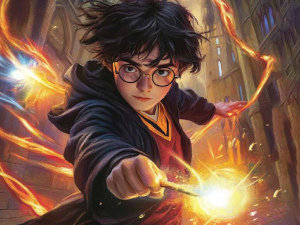

This problem is a Mooshak version of a SPOJ Problem.

Harry Potter has \(n\) mixtures in front of him, arranged in a row. Each mixture has one of 100 different colors (colors have numbers from 0 to 99).He wants to mix all these mixtures together. At each step, he is going to take two mixtures that stand next to each other and mix them together, and put the resulting mixture in their place.
When mixing two mixtures of colors \(a\) and \(b\), the resulting mixture will have the color \((a+b) \mod 100\).
Also, there will be some smoke in the process. The amount of smoke generated when mixing two mixtures of colors \(a\) and \(b\) is \(a \times b\).
Find out what is the minimum amount of smoke that Harry can get when mixing all the mixtures together.
The first line contains \(t\), the number of test cases in the input
\(t\) lines follow, each containing one test case. Each case starts with \(n\), the number of mixtures, followed by \(n\) numbers \(m_1, m_2, \ldots, m_n\), the initial colors of the mixtures.
For each test case, output a line with the minimum amount of smoke.
| Example Input | Example Output |
|---|---|
2 2 18 19 3 40 60 20 | 342 2400 |
Explanation of example
For the first case, the only option is to mix 18 and 19 resulting in 18 × 19 = 342 smoke.
In the second test case, there are two possibilities:
The first scenario is a much better way to proceed.
Content by Pedro Ribeiro (DCC/FCUP), migrated from www.dcc.fc.up.pt/~pribeiro/aulas/pc2627/problems/pc027.html to demonstrate the UC Design Kit.